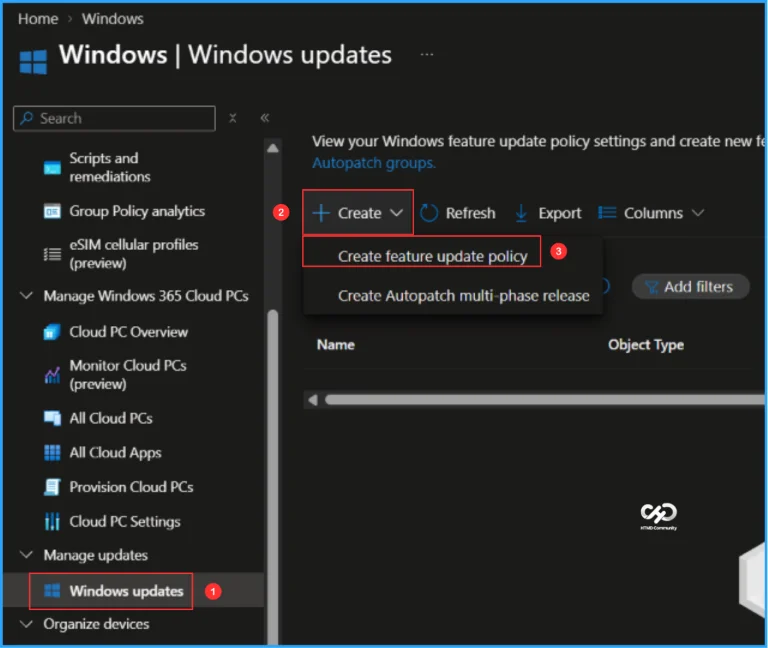
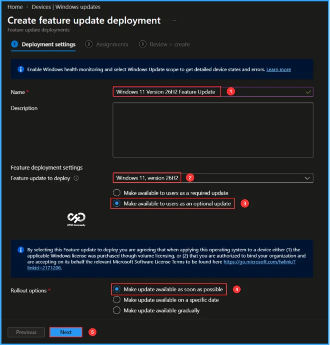
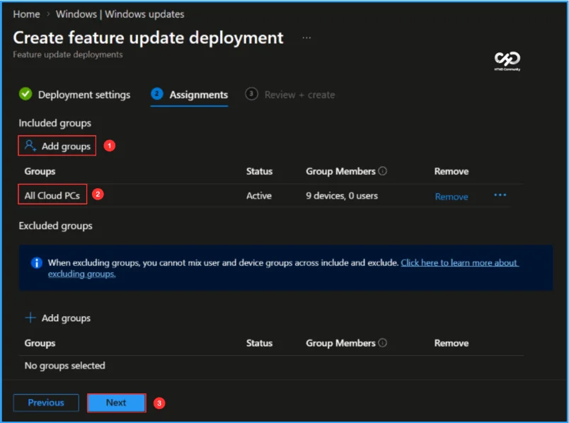
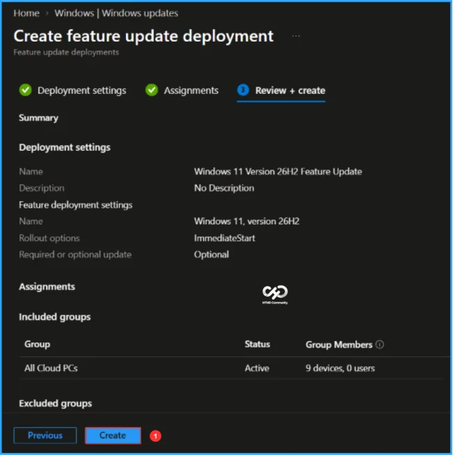
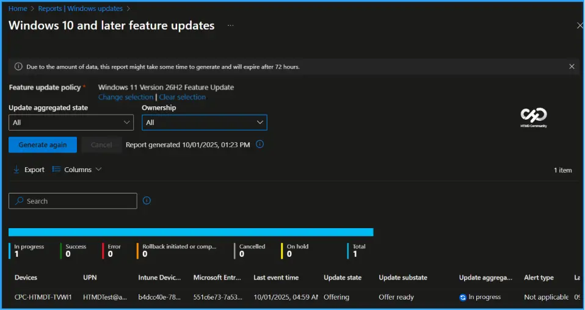
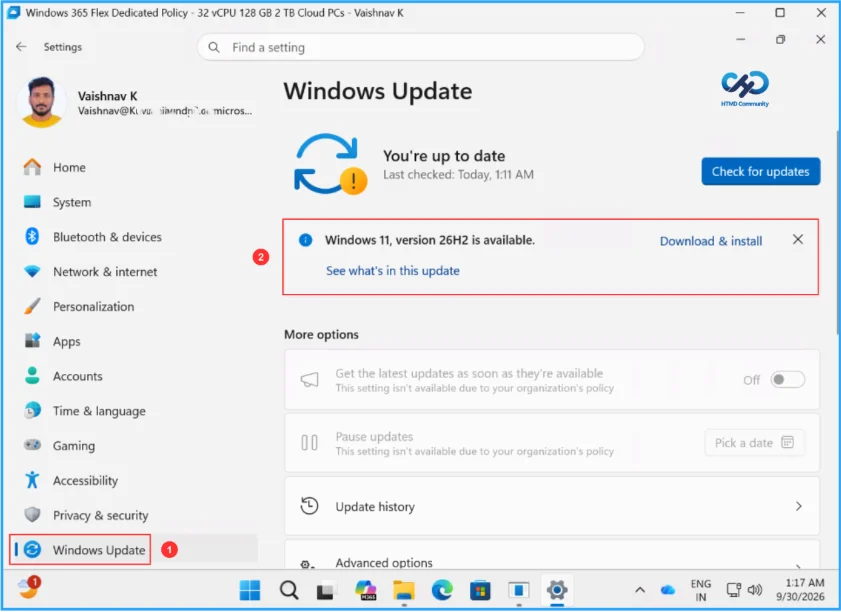

Key Takeaways
- Generally Available: Windows 11 26H2 is the latest annual feature update for Windows 11.
- Enablement Package: Eligible devices running Windows 11 24H2 or 25H2 can upgrade with minimal deployment overhead.
- Same Servicing Foundation: 26H2 builds on the same underlying code base and servicing foundation, helping organizations simplify validation and deployment.
- Latest Innovations: Brings the latest Windows features, security improvements, and management enhancements with a predictable, low-disruption upgrade experience.
In this latest article, let’s look at how to deploy the Windows 11 26H2 Feature Update using Microsoft Intune. Windows 11 26H2, is delivered through a lightweight enablement package for eligible devices running Windows 11, versions 24H2 or 25H2. Instead of requiring a traditional full OS upgrade, the enablement package activates features that are already included in the device’s code base. This results in a smaller download, faster installation, and lower deployment overhead, while allowing organisations to continue using their existing Windows servicing and deployment processes.
What’s New in Windows 11 Version 26H2?
Windows 11 version 26H2 brings together a range of improvements introduced across Windows 11 24H2 and 25H2. The update focuses on security, device management, deployment, productivity, and accessibility, giving organizations more capabilities while maintaining a predictable Windows servicing experience.
| Area | Key Updates in Windows 11 26H2 |
|---|---|
| Security | Administrator protection provides just-in-time admin privileges and profile separation. Built-in Sysmon helps capture security-related system events. Smart App Control can now be enabled or disabled without reinstalling Windows. |
| Windows Hello & Cryptography | Enhanced Sign-in Security expands support for compatible fingerprint sensors. Windows also adds support for post-quantum cryptography APIs, including ML-KEM and ML-DSA. |
| Driver Security | Windows strengthens kernel driver security by changing how third-party and cross-signed drivers are trusted, while continuing support for approved WHCP and trusted legacy drivers. |
| Windows Autopilot | Device association helps identify trusted devices during Windows Autopilot Device Preparation and enables device-targeted policies and enrollment scenarios. |
| Backup & Recovery | Windows Backup and Restore expands support for Microsoft Entra hybrid joined devices, Cloud PCs, and multi-user environments. Point-in-time restore provides another option to roll back apps, settings, and personal files. |
| Application Management | Policy-based app removal provides more control over preinstalled Microsoft apps on Enterprise and Education editions. App update orchestration helps applications coordinate updates with Windows Update. |
| IT Administration | RSAT for Arm64 brings administration tools such as Group Policy, DNS, DHCP, and Active Directory tools to Windows 11 Arm64 devices. |
| File Explorer | New productivity and AI capabilities, additional archive format support, quick actions for work/school accounts, and performance improvements. |
| Windows Search | Improved search results with previews, better handling of typos and partial app names, clearer result types, and improved indexing. |
| Start & Taskbar | Additional customization options, including new Start menu layouts and sizing options, more taskbar positioning choices, and a smaller taskbar option. |
| Task Manager | Provides better visibility into NPU utilization and memory usage and helps identify applications running inside an AppContainer. |
| Accessibility | Magnifier, Narrator, and Voice Access receive multiple improvements, including better screen reader support, Braille Viewer, improved Word navigation, natural-language voice commands, and additional language support. |
Create Windows 11 26H2 Upgrade Feature Update Policy in Intune
Here are the steps to create a brand-new Windows 11 26H2 Feature Update Policy using Intune. Let’s discuss the step-by-step method to create this.
- Sign in to the Microsoft Intune admin center
- Navigate to Devices > Windows > Manage updates > Windows updates.
- Click on Feature updates > +Create > Create feature update policy

On the Deployment settings page, configure the required settings based on your deployment requirements. Keep in mind that this feature supports upgrades only and cannot be used to downgrade a device to an earlier version of Windows. Once the settings are configured, click Next to continue.
- Name: Windows 11 Version 26H2 Feature Update
- Description: Optional
- Feature deployment settings feature update to deploy: In the drop-down options, select Windows 11, version 26H2
- Enable the radio button to Make available to users as an optional update
- Rollout options: Make update available as soon as possible
Note: By selecting this Feature update to deploy you are agreeing that when applying this operating system to a device either (1) the applicable Windows license was purchased though volume licensing, or (2) that you are authorized to bind your organization and are accepting on its behalf the relevant Microsoft Software License Terms to be found here https://go.microsoft.com/fwlink/?linkid=2171206.

Click Next and assign the policy to a device group. In this example, I am assigning it to All Cloud PCs (Windows 365 Cloud PCs). Under Included Groups, click Add Groups, select the required device group, and then click Next.

On the Review + create page, carefully review all the settings configured for the Windows 11 26H2 Feature Update Deployment. Once you have verified that all settings are correct, click Create to deploy the feature update policy to the assigned devices.

Monitor the Windows 11 26H2 Upgrade Deployment Status
The policy has now been deployed to the Microsoft Entra ID group and will be applied to devices after the next Intune sync. Once the devices check in, you can monitor the deployment and upgrade progress from the Intune Portal. Follow the steps below to review the Windows Feature Update deployment status and generate reports to track the upgrade progress for your Cloud PCs.
- Navigate to Reports > Windows updates> Reports tab > Select Windows Feature Update Report
Under the Feature Update policy, choose the Feature update policy as Windows 11 26H2 Feature Update. Click OK. Leave Update aggregated status and Ownership as “All” and click on Generate report

End User Experience – Windows 11 26H2 Upgrade Deployment
We must now check whether the Windows 11 26H2 Upgrade Deployment policy deployment is working properly. Log in to one of the policy-targeted devices.
Click the Search Icon and Settings > Windows Update. You can see that Windows 11 version 26H2 is available for users, they can click the Download & install option to get it.

Need Further Assistance or Have Technical Questions?
Join the LinkedIn Page and Telegram group to get the latest step-by-step guides and news updates. Join our Meetup Page to participate in User group meetings. Also, join the WhatsApp Community to get the latest news on Microsoft Technologies. We are there on Reddit as well.
Author
Vaishnav K has over 13 years of experience in SCCM, Intune, Modern Device Management and Automation Solutions. He writes and shares knowledge about Microsoft Intune, Windows 365, Azure, Entra, PowerShell Scripting, and Automation. Check out his profile on LinkedIn.